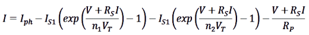

|
||||||||||||||||||||||||||||||||||||||||||||||||||||||||||||||||||||||||||||||||||||||||||||||||||||||||||||||||||||||||||||||||||||||||||||
SigmaGraph integrates the Lua scripting language, which gives you the possibility to programmatically control the application and program you own algorithms. Lua was chosen to be embedded in SigmaGraph mainly because of its high speed and its relatively small size. To learn Lua, you can read the official documentation (http://www.lua.org/manual/) or tutorials. To write and run script, open the Script Window by selecting ‘View/Script Window’ menu (or press F11 key). The script output will be redirected to the Output Window. The SigmaGraph editor supports syntax highlighting, line numbering, markers (bookmarks), code completion, etc. You can customize all the editor options (font, colors, line spacing, ...); Menu/Options. With SigmaGraph scripting capabilities, you can either control the application throw three objects (‘classes’): Doc, Data and Plot or write and run you own general-purpose Lua programs. With the Doc class, you can access document specific methods, like creating, saving, opening or closing document. With the Data class, you can manipulate datasheet: adding, deleting columns or rows, setting cells values, masking/unmasking cells … With the Plot class, you can control graph: adding or removing curves, changing axis style … Note that all the Doc methods are accessible to Data and Plot classes (throw the inheritance mechanism). Note also that all the SigmaConsole mathematical functions are accessible in the script with the same syntax (cf. §3.8). In order to use SigmaGraph classes, the first step is to create a class instance:
When class instance created, you can use all the class methods. Example: The following script will create a new datasheet named “SigmaGraph” and fill the first column A with values from 0 to 4.5 with 0.5 step and the second column B by a formula. The B versus A curve is then added to graph: The math functions are mapped to global functions (e.g. : user can use cos or math.cos). Below is a summary of the Lua math functions: math.abs math.acos math.asin math.atan math.atan2 math.ceil math.cos math.cosh math.deg math.exp math.floor math.fmod math.frexp math.huge math.ldexp math.log math.log10 math.max math.min math.modf math.pi math.pow math.rad math.random math.randomseed math.sin math.sinh math.sqrt math.tanh math.tan And a summary of the SigmaScript global math functions: abs acos asin atan atan2 ceil cos cosh deg exp floor fmod frexp huge ldexp log log10 max min modf pi pow rad random randomseed sin sinh sqrt tanh tan NB: Lua gives the neperian logarithm the name log and the decimal logarithm is named log10, as in C language. Mathematical Console uses ln for neperian logarithm and log for decimal logarithm. Special math functions are included (lmath namespace), extending the Lua math functions. Summary of lmath functions and constants: Functions: lmath.exp2(x) 2^x lmath.logb(x) exponent of x lmath.cbrt(x) cubic root lmath.hypot(x,y) sqrt(x²+y²) lmath.erf(x) error function lmath.erfc(x) complementary error function lmath.lgamma(x) ln(gamma(x)) lmath.tgamma(x) gamma(x) lmath.trunc(x) nearest integer lmath.round(x) nearest integer, rounding lmath.isinf(x) number is infinite ? lmath.isnan(x) not a number ? lmath.isnormal(x) number is normal ? lmath.asinh(x) lmath.acosh(x) lmath.atanh(x) lmath.gauss(x,b,c) G(x) = exp(-(x - b)² / 2c²) lmath.lorentz(x,b,c) L(x) = ((1/pi)*c / ((x - b)² + c²)) Constants: Universal constants in international units (SI) lmath.q Electron charge (in C) lmath.me Electron mass (kg) lmath.kb Boltzmann constant (J/K) lmath.h Planck constant (Js) lmath.c Speed of Light in vacuum (m/s) lmath.na Avogadro constant (1/mole) The data namespace includes functions to calculate the descriptive parameters of a list of values, perform data fitting and sorting: -- Stats With the data module, you can also perform data fitting by using the function fit: model is one of the builtin fitting models: "Linear", Poly2", "Poly3", "Poly4", Example: -- Linear Fitting y = a + b * x You can also perform sort data by using the function sort: Example: -- Sorting data The following table summarizes the Doc, Data and Plot methods:
In addition to the SigmaGraph classes (Doc, Data and Plot), you can use the Physics table containing the fundamental constants and some useful functions: -- Constants Physics.k -- Boltzmann constant Physics.q -- electron charge Physics.h -- Planck constant Physics.c -- speed of light in vacuum Physics.e -- vacuum permittivity Physics.n -- Avogadro constant Physics.m -- electron mass -- Functions Physics.Current(V, T, ISC, RP, IS1, n1, IS2, n2, RS, I1, I2) Calculate the current versus voltage of a photovoltaic cell by solving the two-diode model nonlinear equation:  with: V: Applied voltage. T: Temperature. ISC: Short-circuit current. RP: Parallel resistance. RS: Series resistance. IS1: Saturation current for diode 1. n1: Ideality factor for diode 1. IS2: Saturation current for diode 2. n2: Ideality factor for diode 2. This function is used in CurrentModel ( http://www.hamady.org ). Physics.Capacitance(Freq, r, L, GLF, CHF, C1, Tau1, C2, Tau2) Physics.Conductance(Freq, r, L, GLF, CHF, C1, Tau1, C2, Tau2) Calculate the admittance (capacitance and conductance/w) of a PN or Schottky junction, with two trap levels:
with: L: Equivalent series inductance. r: Series resistance. GLF is the low-frequency parallel conductance, CHF the high-frequency parallel capacitance, Ck the difference between the “low” (relatively to the transition frequency of the level) and “high” frequency capacitances for the level k, ant Tauk its time response. NB: the function Physics.Conductance return the conductance divided by the angular frequency w (= 2*pi*f). These functions are used in AdmittanceModel ( http://www.hamady.org/tools/admittance.html ). All script examples are available in Help/Examples Menu. Example 1: Plot function: -- SigmaGraph script sample Example 2: Curve fitting: -- SigmaGraph script sample Example 3: calculate and plot the current-voltage characteristic curve of a photovoltaic cell: -- SigmaGraph script sample
SigmaGraph allows you to organize very easily your scripts with the integrated favorites manager (select ‘Favorites’ menu or click the corresponding toolbar button). You can (i) group all your most used scripts and load them very quickly; (ii) automatically run multiple scripts and open one script at SigmaGraph startup (very useful feature for specialized library or frequently used/modified scripts). With the favorites manager, you can add, remove, move up or down, load, auto-run or auto-load script by clicking the corresponding button.
|
||||||||||||||||||||||||||||||||||||||||||||||||||||||||||||||||||||||||||||||||||||||||||||||||||||||||||||||||||||||||||||||||||||||||||||
|
||||||||||||||||||||||||||||||||||||||||||||||||||||||||||||||||||||||||||||||||||||||||||||||||||||||||||||||||||||||||||||||||||||||||||||